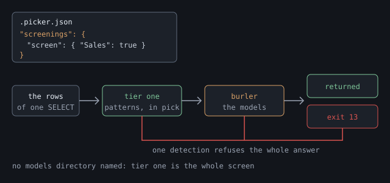

Shoddy · Picker
The third level. Stop regulated rows leaving a database by accident. The first tier needs nothing installed, and the burler checks the rest before they leave.
This page describes the screenings level. It is off until .picker.json has a screenings section. With it on, pick checks every answer for regulated data before the answer leaves. Regulated data means facts about people that a law protects, such as a social security number or a medical record, and one match refuses the whole answer with exit code 13.
Most projects never turn this level on. The guardrails and the login already decide what can be asked for, and the screen is for the few databases that hold records about people.

Turn it on when a database holds records about people, and someone outside your team could read the transcript. What select returns goes into the assistant's context, and from there into a transcript, a log, and wherever those are sent. The screen sits between the rows and all of that.
| The database holds | Turn it on? |
|---|---|
| patient records, visit notes, lab results | Yes. This is the case the screen was built for. |
| customer records with names, addresses, card or account numbers | Yes, with identifiers at least. That catches card and account numbers. Names and addresses need a model, as the categories show. |
| free-text columns nobody checks: notes, comments, support tickets | Yes. A free-text column is where an identifier turns up that no scope expected. |
| reference data, lookups, order lines with no personal columns | No. If these sit inside a screened database, turn the screen off for their scope. Carving out a scope shows how. |
| anonymised or made-up data | No. The screen would refuse invented identifiers all day and protect nobody. |
Note Do not screen a working database with true just to see what happens. One of the patterns matches any email address, and customer tables are full of them, so every select that returns one will refuse. The detector is working, but on a database nobody meant to screen.
select, describe and objects. Each one shows something a database holds, while catalogs and doctor report your own file and are not screened.select that returns none of them is served.Add a screenings section with a screen object. Each key names what to screen, and each value says which categories to screen for. Here a database is screened, one scope is taken out, and one scope screens for more.
{
"tools": {
"servers": {
"main": { "connect": "env:MAIN_SQL" }
}
},
"guardrails": {
"servers": {
"main": {
"databases": {
"Sales": {
"can": ["list", "select", "describe"],
"scopes": [
{ "object": "ref.*",
"can": ["list", "select"] },
{ "object": "dbo.Notes",
"can": ["list", "select"] }
]
}
}
}
}
},
"screenings": {
"screen": {
"Sales": ["identifiers"],
"Sales/ref.*": false,
"Sales/dbo.Notes": ["identifiers", "clinical"]
}
}
}levels
tools on, always; settings from C:\github\app\.picker.json
guardrails on, from C:\github\app\.picker.json
screenings on, from C:\github\app\.picker.json
main (connect: env:MAIN_SQL)
Sales: list select describe [screen: identifiers]
ref.*: list select [screen: nothing]
dbo.Notes: list select [screen: identifiers clinical]
source: C:\github\app\.picker.jsonscreenings line says on, and names the file that turned it on.[screen: …] marker shows only where a screen is set. A scope with no marker takes its database's screen.[screen: nothing] means the screen is off for that scope. It is shown because that scope said so, rather than taking the database's screen.A key names a database, or a database and one of its scopes. To name a scope, write the database, a slash, and the scope's object pattern exactly as the scope writes it: "Sales/dbo.Customers" or "Sales/ref.*".
| Key | With guardrails on | With guardrails off |
|---|---|---|
"Sales" | screens the declared database Sales. It must be declared | screens Sales if the login can reach it |
"Sales/dbo.Customers" | screens that scope. The scope must be declared under Sales | refused. Scopes belong to the guardrails level, so a screen names a whole database only |
Here is a screen at the tools level, which screens one whole database and leaves every other reachable database alone.
{
"tools": {
"servers": { "main": { "connect": "env:MAIN_SQL" } }
},
"screenings": {
"screen": { "Clinic": true }
}
}catalogs shows no screen markers. It lists no databases for an open server, so there is nothing to mark, and the screenings line in the levels block is how you confirm the section was read.screen inside a database or a scope is refused. That was the shape of an older version, and the message shows the key to write under screenings instead.screen. It may hold screenings.models only, as Name the directory shows.The value says which categories to screen for. There are three ways to write it, and one that is refused.
| You write | It screens |
|---|---|
true | all four categories. You cannot forget one this way |
["identifiers", "clinical"] | only those two. A plain list includes |
["-scientific"] | everything except scientific. A list of - words excludes |
false | nothing. Use it to take the screen off a scope |
["identifiers", "-scientific"] | refused when the file is read. It could mean "identifiers only" or "all but scientific", and those differ by two categories |
A misspelt category is refused too. Otherwise "lgal" would quietly take a screen away, and you would not find out until data left a database you thought was covered.
Note Three words that name a law are refused, and the message says what to write instead. phi, pii and sci each promise more than runs until a model is installed.
| Refused | Write instead |
|---|---|
phi | identifiers for the patterns, and clinical for the model that reads clinical text |
pii | identifiers |
sci | scientific |
| Word | What it is about | What checks it | Which model |
|---|---|---|---|
identifiers | structured identifiers, whoever they belong to | six patterns inside pick. The only category that works with nothing installed | none, ever |
clinical | clinical text, the concern of US health privacy law | a model you install, and nothing until you do | a de-identification model from the BioBERT or ClinicalBERT family |
legal | contract and consumer-report text | a model you install, and nothing until you do | a contract-clause model trained on CUAD, or LegalBERT |
scientific | research and scientific data | a model you install, and nothing until you do | a SciBERT model trained to label entities |
clinical, legal and scientific screen nothing until then.These run inside pick itself, with no model and no second program. They are the same six patterns that fettle runs, and a check in this repository holds the two sets equal.
| Pattern | Matches | Left alone on purpose |
|---|---|---|
ssn | the hyphenated form, leaving out every range that is never issued | nine bare digits, which are more often an order number than a person |
credit-card | 13 to 19 digits in card groupings, passing the Luhn check digit | the same shape failing Luhn, and bare digit runs |
phone | a leading +, or a separated grouping | ten bare digits |
email | the ordinary address shape | nothing |
medical-record-number | an identifier under its own label, such as MRN: or patient id | bare strings of that shape, which would refuse every part number |
date-of-birth | a date under its own label, such as DOB: or date of birth | bare dates, which a database is full of |
All six report as one category, identifiers. Each is an identifier with a fixed shape or a label in front of it, and none of them reads clinical language. The patterns run over the rows exactly as they would leave, so an MRN: line inside one notes cell is found.
A scope's screen replaces its database's screen. That lets you take the screen off reference data inside a screened database, or have one scope screen for more than the rest.
"screenings": {
"screen": {
"Sales": true,
"Sales/ref.*": false,
"Sales/dbo.Notes": ["identifiers", "clinical"]
}
}A correct file and a screen that holds are two different claims. Test the second one with made-up rows, such as invented numbers and fake customers, never real ones. Then select something you know holds an identifier.
$ pick select "SELECT name, notes FROM dbo.Intake"
pick: this response would disclose regulated data: 1 in identifiers. The matches are not
quoted, because the refusal would then disclose them. Select fewer columns or rows, or take
the screen off this scope if the content is not regulated.
$ echo $LASTEXITCODE
13The refusal gives a category and a count, never the value. A refusal that showed the value would write it into the log, which is the harm the screen exists to stop. No rows are trimmed, because an answer with the bad rows quietly removed would look complete and would not be.
Each line below tests one edge:
| Select rows holding… | Exit | Because |
|---|---|---|
| nothing regulated | 0 | the screen is on and the answer is clean. Test this too: a screen that refuses everything looks like a working one |
a made-up SSN, 123-45-6789 | 13 | 1 in identifiers, and the number appears nowhere in the refusal |
the same SSN, from a scope whose screen is false | 0 | the scope's screen replaced the database's |
| the same SSN, in a column the scope hides | 0 | the column rule removed it before the screen saw it |
| a screened table joined to an unscreened one | 13 | any screened scope the query read screens the whole answer |
| anything, when a model category is screened and its model is missing | 13 | it fails closed. The refusal names what could not run, as below |
| clinical free text, with the clinical model installed | 13 | N in clinical. No pattern matches prose, so only the model can have refused it |
Every refusal names its own cause. The first few words say whether something was found or whether the screen could not run, and those are different problems.
| It says | Do this |
|---|---|
this response would disclose regulated data: |
The screen is working. Select fewer columns or rows, or, if the content is not regulated, take the screen off that scope. |
this response could not be screened, so it is not being served: |
The second tier broke, and the rest of the message names the part. It may be burler missing from beside pick, a model missing from the directory, or a model that stopped or ran out of time. Run pick doctor first, and then run burler by hand. |
Serving an answer because the check broke is the one outcome the screen must never produce. A burler that will not start, a model that will not load, an answer that will not parse, and a model that runs out of time all refuse with exit 13. So does a pattern that runs out of time on a very large answer, because a served answer must always mean the check ran.
This looks like an outage, and that is the intended trade. A screen that quietly stopped screening would be worse, because nobody would know.
| When | What happens |
|---|---|
| every screened answer | the patterns run inside pick. Each has a one-second limit, and in practice they are too fast to notice next to a network trip |
| the first model-screened answer after a quiet spell | burler starts and loads a model. Seconds. pick waits up to 90 of them before it gives up |
| every answer after that | Tens of milliseconds. burler stays running between answers |
| five minutes with nothing to screen | burler is stopped and its memory released |
a database screening identifiers alone | burler never starts. The patterns were the whole check |
| It does not | Because |
|---|---|
| offer a confidence setting | any detection refuses. A setting gets turned down until the check is off |
| trim, redact or mask rows | it refuses the whole answer. An answer with holes in it would look like a safe copy, and would not be one |
| judge what stays in the database | it reads the answer leaving, never the tables |
| stop anything outside pick | SSMS, sqlcmd, a reporting tool or a person with the connection string reads the same rows unscreened. The narrow login holds for every client |
| certify that you meet a law | the categories name what runs, never a statute. Nothing here is "HIPAA compliance" |
Note None of this is needed for identifiers. That category runs inside pick with nothing installed. This half covers the other three categories, clinical, legal and scientific, each of which needs a model.
A model here is a trained program that labels the words in a piece of text. It is handed the rows, and answers which words are a person, a date, an identifier, and so on. Setting one up takes five steps: install burler, choose the models, prepare them, lay out the files, and name the directory.
burler is a second program, in its own download. The name is the mill trade's word for the person who picks the faults out of finished cloth before it leaves the mill, and this program's job is the same. It runs the models, and pick talks to it over a pipe.
It is separate because of what the models need. Running them needs ONNX Runtime, a library with native parts for each operating system, while pick stays a single file you copy onto a machine. Putting the models inside it would make every download carry a feature most projects never use.
pick, because that is the only place pick looks for it. pick does not search PATH, so an environment variable cannot swap in a different program.$dir = "$env:LOCALAPPDATA\Programs\pick" # wherever pick.exe already is
Expand-Archive burler-X.Y.Z-win-x64.zip -DestinationPath $dir -Force
Get-ChildItem $dir -Recurse | Unblock-File
Get-ChildItem $dir\burler.exe # it should be beside pick.exetar -xzf burler-X.Y.Z-osx-arm64.tar.gz -C ~/.local/bin
xattr -d com.apple.quarantine ~/.local/bin/burler # macOS only
ls -l ~/.local/bin/burler # beside pickDownloads come for the same four platforms as pick: win-x64, linux-x64, osx-x64 and osx-arm64. Take the one that matches your pick, because the two run together and must be built for the same machine.
Nothing happens yet. pick does not start burler until a models directory is named in the last step, so installing it early does no harm.
Note Already running fettle with models on this machine? Then burler is installed beside it, and the models directory exists. Put a copy of burler beside pick too, because each program looks only beside itself, and skip to naming the directory. One set of models serves both programs.
pick download of a few megabytes. Several useful models also carry terms that would forbid this project from passing them on, so you fetch them, you read their licence, and you decide.You need a model trained to label words, not a base model. BioBERT and SciBERT are base models, which know clinical or scientific language but have not been taught to label anything. What you need is a fine-tune: a base model trained further on a labelling task, such as finding patient details in clinical notes. Look for a model card that names a task, not only a subject, before you download anything.
Any model in the BERT family works, as long as it labels each word (a token classifier) and can be saved as ONNX.
| Category | Family | What to look for |
|---|---|---|
clinical | BioBERT, ClinicalBERT | a de-identification fine-tune. Models trained on the i2b2 and n2c2 data label patient names, dates and record numbers, none of which any pattern finds |
scientific | SciBERT | a fine-tune that labels entities in scientific text, not the base |
legal | a general model with an open licence, or LegalBERT | contract-clause models trained on CUAD are the easiest start. LegalBERT is stronger, and has a licence condition, shown below |
There is no row for identifiers, because it is the pattern tier and takes no model. If you want names of people and places caught, that is a model under one of the three categories above.
Check the licence before you use a model. Some clinical models carry terms that forbid passing them on, and a models directory you share with a colleague is passing them on.
These were checked against the model cards and source repositories on 20 August 2026, so check again before you rely on them. Terms change, and this table is a starting point, not legal advice.
| Model | What was found | What that means for you |
|---|---|---|
| BioBERT | Apache-2.0, in the licence file of dmis-lab/biobert on GitHub. The copies on model hosts carry no tag | usable. Record the GitHub repository as the source, not the copy you downloaded |
| SciBERT | Apache-2.0, on allenai/scibert. The copies carry no tag either | usable, with the same rule for the source |
| ClinicalBERT, and the i2b2 de-identification fine-tunes | tagged MIT by the groups that held the data agreements | usable on that grant. Record the revision as well as the source |
| LegalBERT | CC-BY-SA-4.0, a share-alike licence | usable as your own add-on. Do not fine-tune from it, because share-alike carries into whatever you build on it |
| anything with no licence anywhere | none | do not use it, however good its scores |
burler runs models saved as ONNX, a file format that lets programs other than the one that trained a model run it. Most published models are not in that format yet, so you convert each one once, and Hugging Face's optimum tool does it in one command. The task name token-classification means a model that labels each word.
pip install optimum[onnxruntime]
optimum-cli export onnx --model ORG/CHECKPOINT --task token-classification out/Quantising afterwards is optional, and worth doing. Quantising stores the model's numbers less precisely, usually in 8 bits instead of 32. The file shrinks to about a quarter and runs several times faster, at a small cost in accuracy. The same tool can do this, and the sizes on this page are for quantised models.
Make one directory per category, named for the category, under one parent:
screening-models/
clinical/
model.onnx
vocab.txt
labels.json
manifest.json
legal/
model.onnx
vocab.txt
labels.json
manifest.jsonOnly the categories you screen need a directory. A category no screen names is never looked for, and models load one at a time, when first needed.
| File | What it is |
|---|---|
model.onnx | the converted model |
vocab.txt | the list of word pieces the model was trained on. Take it from the same model. A mismatched list gives confident nonsense |
labels.json | a JSON array of label names, one per class, in order. The position in the array is the class number. An object that maps numbers to names is refused |
manifest.json | what the model says about itself. Required, as shown below |
A directory missing any of the first three is refused by name, so you learn which file is missing, not just that something failed.
The manifest has four fields, and each one is required and may not be empty.
{
"checkpoint": "dmis-lab/biobert-base-cased-v1.1",
"revision": "a1b2c3d",
"licence": "Apache-2.0",
"provenance": "https://github.com/dmis-lab/biobert"
}provenance is where you read the licence. That is often not where you downloaded the file, which is why both are recorded.Put the models directory in the local file, under screenings. Where the models sit is a fact about one machine, not about the project, and the local file stays out of source control.
// .picker.local.json, beside .picker.json
{
"screenings": { "models": "C:/models/screening" }
}Write the path with forward slashes, and know that a relative path is read from the folder of the file it is written in. If both files name a directory, the local file wins. As before, no restart is needed.
With the directory named, pick catalogs gains a models: line, and pick doctor checks the models directory and burler. The doctor runs those two checks only when screenings are on.
$ pick catalogs
levels
tools on, always; settings from C:\github\app\.picker.json
guardrails on, from C:\github\app\.picker.json
screenings on, from C:\github\app\.picker.json and C:\github\app\.picker.local.json
main (connect: env:MAIN_SQL)
Sales: list select describe [screen: identifiers clinical]
models: C:\models\screening
source: C:\github\app\.picker.json
$ pick doctor
pick X.Y.Z
ok tools: on, always; settings from C:\github\app\.picker.json
ok guardrails: on, from C:\github\app\.picker.json
ok screenings: on, from C:\github\app\.picker.json and C:\github\app\.picker.local.json
ok configuration: C:\github\app\.picker.json
ok server main: connects (1 database(s) declared)
ok models: C:\models\screening
ok burler: C:\Users\you\AppData\Local\Programs\pick\burler.exeIf burler is not beside pick, the doctor marks that line !! and says where it looked. The message adds that only model screening needs it, so a project that screens identifiers alone can ignore that line.
That is why pick does not check the directory when it reads the file. A file opened on a machine without the models is not broken, and refusing the whole file would take away every database instead of only the screen. The refusal comes at the answer instead, where it can name what could not run.
When the model tier is in doubt, run burler yourself. It reads one request per line and answers each one with one line.
$ burler --models C:/models/screening
{"op":"screen","categories":["clinical"],"payload":"the weather was fine"}
{"ok":true,"findings":[]}Type the request line, press Enter, and read the answer.
| What comes back | What it tells you |
|---|---|
{"ok":true,"findings":[]} | everything works. It loaded the model, ran it, and found nothing in that sentence |
{"ok":true,"findings":[{"category":"clinical","count":1,… | it found something. Try a sentence with a name or a date in it to see this |
{"ok":false,"error":"'clinical' is screened and there is no model for it…"} | the models directory has no clinical folder. The message names the path it looked at |
{"ok":false,"error":"the model at … would not load…"} | the file is there, but it is not a model burler can run. Usually a bad export, or a download that did not finish |
| nothing at all, and it exits | check the error output. With no --models, it says burler needs --models DIRECTORY, naming where the screening models are. and exits with code 2 |
An empty findings list means it checked and found nothing, and a missing one is a fault. The two are never written the same way.
Give the category a directory of subdirectories instead of one model:
screening-models/
legal/
cuad-clauses/ model.onnx, vocab.txt, labels.json, manifest.json
legalbert-ner/ model.onnx, vocab.txt, labels.json, manifest.jsonTheir findings add together. A detection by any of them refuses, so a second model can only make the screen stricter. burler looks for model.onnx directly inside the category, and if it is there, that is the one model. If not, it loads every subdirectory that holds one.
The models directory may be one that other programs or machines use. One set can serve a whole team, or serve fettle and pick side by side, but know what you are trusting when the directory is not yours alone.
| You want | Page |
|---|---|
| scopes, column rules and the grant words | Guardrails |
| every exit code, including 13 | The reference |
| what pick defends against, and what it does not | The reference |